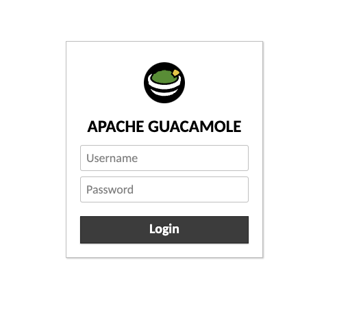
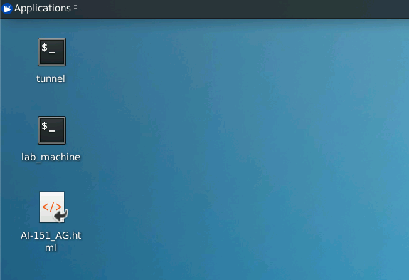

AI-434 Environment Guide
This tutorial will show you how to set up your environment and access our labfiles. You have two options to use our environment:
-
JupyterLab (Recommended): You can access our environment through JupyterLab. You can find the link to your JupyterLab environment in the email containing the lab environment details.
-
Remote Lab Environment (Guacamole): You can also use the Guacamole interface. You are working on the same VM as the SSH option, but through a web interface.
1. JupyterLab
This section shows you how to access our JupyterLab environment.
-
Find the link in the email about the environment to your JupyterLab.
-
Input your password:
-
You can find all of the files once you have logged in. You will have a solved version for each modules lab.

Notes:
-
In Jupyter Notebooks, you have cells that you can run. These cells can be run in any order, but it is recommended that you run all the cells starting from the first one.
-
If you have an error that you can't fix, it is recommended that you restart the kernel and run the cells again.
2. Remote Lab Environment (Guacamole)
This section shows you how to access our Remote Lab Environment (Guacamole).
-
Go to the Remote Lab login page and enter your credentials:

-
Open the tunnel and lab_machine terminals. The lab_machine will be your terminal that you can use.
